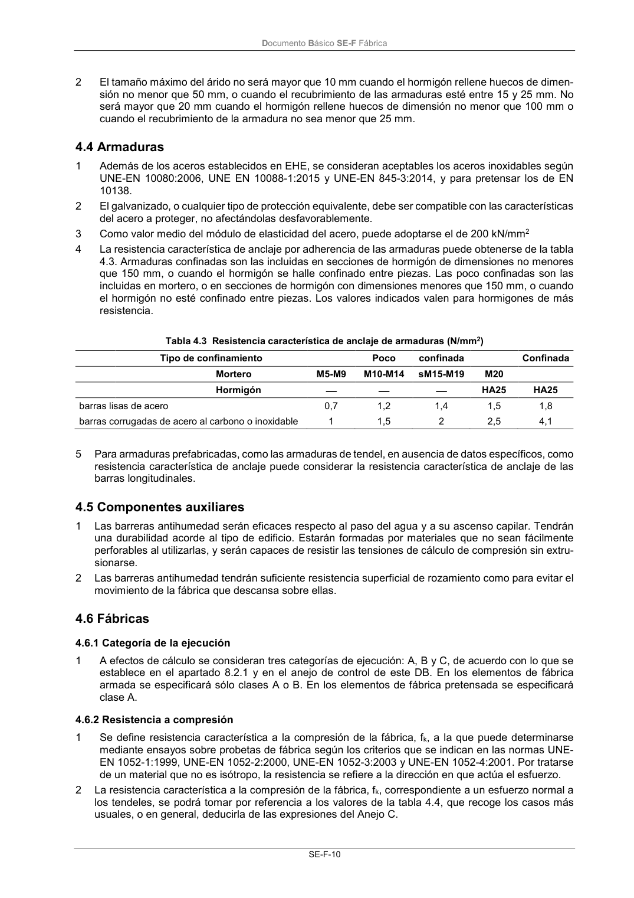

DB-SE-F Fábrica · edición 2019-12-20 · capa oficial
Documento DB-SE-F-oficial · SHA-256 del PDF e3e0805c3b4c307519c26dc34c3fdbf143d842edd013c91b0f52d2c73403d91c
Copia fiel del PDF fuente · Fuente oficial
Ficha de la disposición en la fuente oficial
Formatos: JSON del segmento · Markdown
4.4 Armaduras 1 Además de los aceros establecidos en EHE, se consideran aceptables los aceros inoxidables según UNE-EN 10080:2006, UNE EN 10088-1:2015 y UNE-EN 845-3:2014, y para pretensar los de EN 10138. 2 El galvanizado, o cualquier tipo de protección equivalente, debe ser compatible con las características del acero a proteger, no afectándolas desfavorablemente. 3 Como valor medio del módulo de elasticidad del acero, puede adoptarse el de 200 kN/mm2 4 La resistencia característica de anclaje por adherencia de las armaduras puede obtenerse de la tabla 4.3. Armaduras confinadas son las incluidas en secciones de hormigón de dimensiones no menores que 150 mm, o cuando el hormigón se halle confinado entre piezas. Las poco confinadas son las incluidas en mortero, o en secciones de hormigón con dimensiones menores que 150 mm, o cuando el hormigón no esté confinado entre piezas. Los valores indicados valen para hormigones de más resistencia. Tabla 4.3 Resistencia característica de anclaje de armaduras (N/mm2) Tipo de confinamiento Poco confinada Confinada Mortero M5-M9 M10-M14 sM15-M19 M20 Hormigón HA25 HA25 barras lisas de acero 0,7 1,2 1,4 1,5 1,8 barras corrugadas de acero al carbono o inoxidable 1 1,5 2 2,5 4,1 5 Para armaduras prefabricadas, como las armaduras de tendel, en ausencia de datos específicos, como resistencia característica de anclaje puede considerar la resistencia característica de anclaje de las barras longitudinales.
